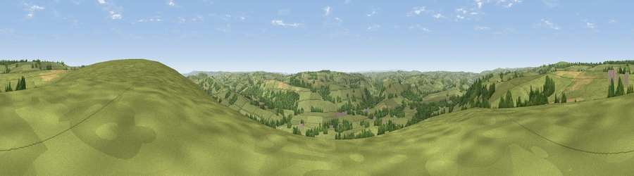

Viewpoint near Skilgate
#12282 in England · top 23% of its area beats it · near SkilgateThe view, rendered

A 360° render of this exact spot computed from the terrain model, tree cover and land cover — summer colours, afternoon light, calibrated against photographs of famous viewpoints. Real trees, hedges and buildings will differ in detail.
The panorama
Grey silhouette: terrain skyline in each direction (720 bearings, Earth curvature and refraction included). Dashed green: skyline with trees (+15 m) and buildings (+8 m) as obstacles. Blue strip: how far the ground is visible on each bearing.
Where the view opens
Wedge length = distance to the farthest visible ground on that bearing (vegetation-aware). Rings at 10, 25 and 50 km.
What fills the view
77% grassland · 19% woodland · 3% cropland
Angular shares of the visible panorama (visual magnitude), not map area. Landscape diversity 0.29 (0–1 Shannon).
Key numbers
More beautiful places nearby
The staircase of upgrades: each row has a higher view potential than everything closer. Driving times are estimates from straight-line distance, calibrated against real road routing — check an actual route before setting out.
| Place | Direction | Drive | Score |
|---|---|---|---|
| Viewpoint near Skilgate | ENE · 0 km | ~2 min | 61.0 |
| Viewpoint near Skilgate | NW · 4 km | ~9 min | 72.5 |
| Viewpoint near Wiveliscombe | E · 8 km | ~16 min | 75.1 |
| Viewpoint near Roadwater | NNE · 11 km | ~21 min | 82.9 |
| Viewpoint near Roadwater | N · 13 km | ~24 min | 85.2 |
| Viewpoint near Luxborough | N · 15 km | ~26 min | 85.5 |
| Wills Neck | ENE · 20 km | ~34 min | 85.7 |
| Viewpoint near West Quantoxhead | NE · 21 km | ~35 min | 87.8 |
51.02236, -3.44820 · source: screening · position refined by local search. Computed location — check access rights before visiting.